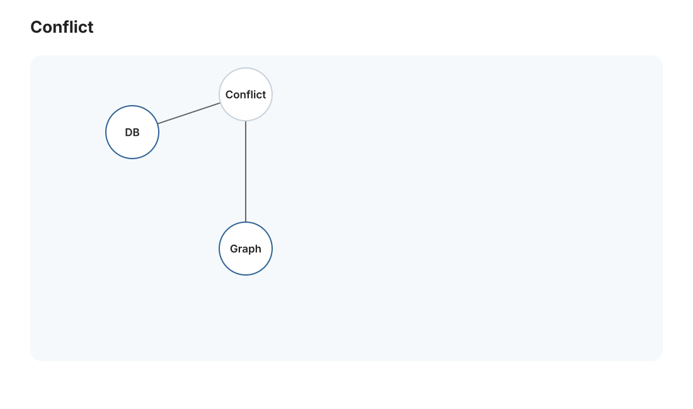
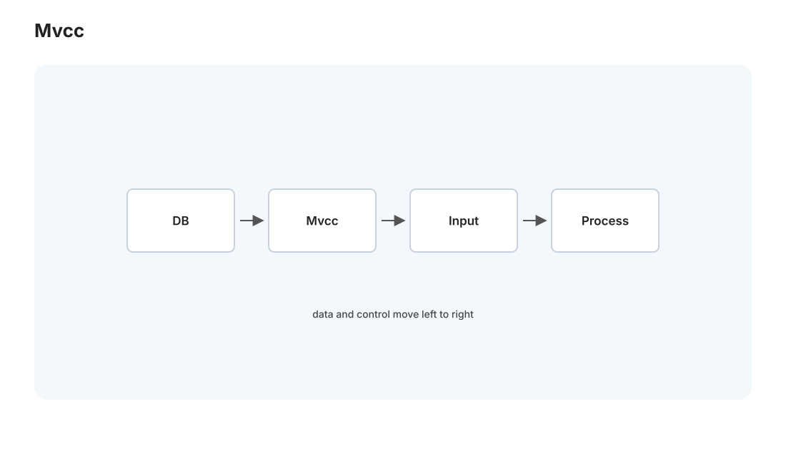
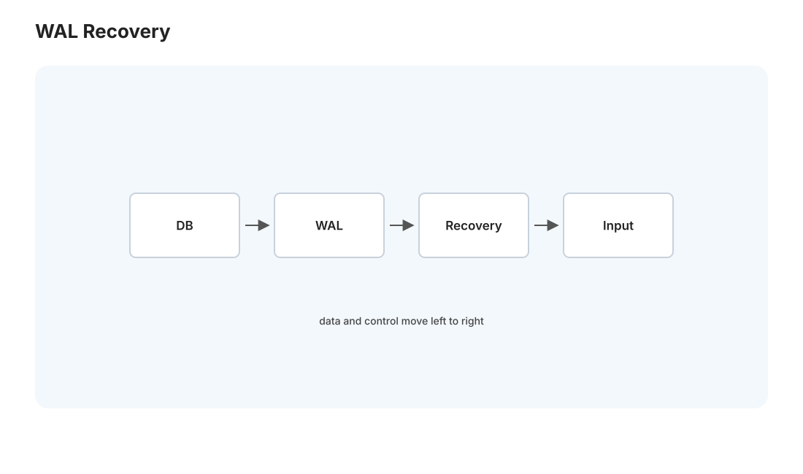

本页目录
数据库 III · 事务、MVCC 与恢复
对标：CMU 15-445 后半 / Database Internals 事务篇 ｜ 前置：db-01/02、os-02（并发）、os-03（崩溃一致性/日志） 数据库最深刻的部分——事务。它给你一个惊人的承诺：一组操作要么全成功要么全不发生（原子），并发执行像串行一样正确（隔离），一旦提交断电也不丢（持久）。这一页讲清 ACID 怎么实现：并发控制（锁 vs MVCC，Postgres 用的后者）与崩溃恢复（WAL——你会看到它就是 os-03 文件系统日志的直系后代）。
1. ACID 与并发的威胁
ACID：原子性（Atomicity，全做或全不做）、一致性（Consistency，不破坏约束）、隔离性（Isolation，并发如串行）、持久性（Durability，提交不丢）。前三个防并发与故障，最后一个防断电。
并发事务不控制会怎样（隔离性要消灭的异常）：
- 脏读：读到别的事务还没提交的数据（它可能回滚）。
- 不可重复读：同一事务内两次读同一行结果不同（别人中途改了并提交）。
- 幻读：两次范围查询行数不同（别人插了新行）。
- 丢失更新：os-02 的竞态在数据库版（两个事务读同一值各自加、后写覆盖前写）。
隔离级别是"允许哪些异常换多少并发"的旋钮：读未提交 < 读已提交 < 可重复读 < 可串行化（最严，完全等价某个串行顺序，无任何异常）。级别越高越安全越慢——又一个 CS 里无处不在的权衡。Postgres 默认"读已提交"，Medusa 若有并发写要想清楚够不够。
2. 可串行化：正确性的黄金标准

并发调度正确的定义：可串行化——并发执行的结果等价于某个串行执行顺序。怎么判一个调度是否可串行化？冲突图（优先图）：事务为点，冲突操作（对同一数据的读写/写写）定向连边，图无环 ⟺ 可串行化（🔗 algo-01 的拓扑排序——无环才有合法串行顺序）。这把"并发正确性"化成一个优雅的图论判定。
3. 两条并发控制路线

① 两阶段锁（2PL，悲观）：读加共享锁、写加排他锁；所有加锁在放锁之前完成（增长阶段 → 收缩阶段）——可证明产生可串行化调度。代价：锁争用、死锁（os-02 的四条件在此，数据库用等待图检测死锁并回滚一个事务打破环）。
② 多版本并发控制（MVCC，乐观读，Postgres/你在用的）【机理级】：每次更新不覆盖旧值，而是造一个新版本，每个版本带事务时间戳。读操作读"对我可见的那个版本"——读永不阻塞写、写永不阻塞读。这是 MVCC 的杀手锏：分析型长查询和写入可以并行不打架（对 Medusa 这种"一边写入一边读取分析"的负载极友好）。
- 快照隔离：每个事务看到一个一致的数据快照（事务开始那刻的世界）。
- 代价：旧版本堆积要垃圾回收——这就是 Postgres 的 VACUUM！"为什么 Postgres 要定期 VACUUM"的答案就在 MVCC：删除/更新的旧行版本（dead tuples）不会立即消失，要 VACUUM 回收，否则表膨胀（🔗 你的 Medusa 运维里 VACUUM 的意义在此彻底讲清）。
- 快照隔离仍有一个微妙异常（写偏斜），真正的可串行化需 SSI（可串行化快照隔离，Postgres 的
SERIALIZABLE）。
4. 崩溃恢复：WAL（os-03 日志的直系后代）

问题：事务提交了但脏页还在缓冲池没落盘，此刻断电——怎么保证已提交的不丢（D）、未提交的不残留（A）？答案是预写日志 WAL（Write-Ahead Logging），和 os-03 文件系统日志是同一思想：
WAL 铁律：任何数据页写回磁盘之前，描述这次修改的日志必须先落盘（write-ahead）。日志是顺序追加的（快），记录每次修改的 redo（如何重做）和 undo（如何撤销）信息。
ARIES 恢复三阶段【骨架】：崩溃重启后——
- 分析：扫日志，确定崩溃时哪些事务未完成、哪些脏页。
- Redo（重做）：从日志重放所有修改（包括未提交的），把数据库恢复到崩溃那一刻的精确状态。
- Undo（撤销）：回滚所有未提交事务的修改（用 undo 信息）。
结果：已提交的事务其修改一定在（D，靠 redo）、未提交的一定没有（A，靠 undo）。"先写日志、崩溃后重放 redo 撤销 undo"——这套机制让数据库能在任意时刻断电而不损坏。提交的定义就是"commit 日志记录落盘"那一刻（所以提交要 fsync，慢但可靠，🔗 os-03 "写入 ≠ 持久化")。
这条主线的完整闭环：os-03 文件系统日志 → 本页数据库 WAL → dist-02 分布式的复制日志（Raft log）——"把状态变更写成一条不可变的顺序日志"是可靠系统的元思想，本站三处呼应，你会在 dist 线看到它第三次登场。
5. 练习与要点
例 1（判可串行化） 给两个交错事务的操作序列，画冲突图判有无环——"并发对不对"用拓扑排序回答，把 algo 线的图论用到事务。
例 2（MVCC 为什么要 VACUUM） 描述一次 UPDATE 在 MVCC 下产生了什么（旧版本 + 新版本），解释不 VACUUM 会怎样（表膨胀、查询变慢）——把你 Medusa 运维里的 VACUUM 从"照做的命令"变成"懂原理的操作"。
例 3（WAL 恢复推演） 事务 T1 已提交、T2 未提交时断电，脏页均未落盘——推演 redo/undo 各恢复了什么，验证 A 和 D 都满足。手推一遍，"数据库为什么断电不坏"就刻进去了。\(\blacksquare\)
📋 大 Project P02（第三阶段·收官）· 事务与恢复
P02-C · ACID、MVCC 与 WAL（承接 P02-A/B）：
- 学习目标：让学生体验“正确的数据库不是能查数据，而是在并发和崩溃下仍然不撒谎”。
- 教师提供：事务 API 骨架、并发事务调度器、崩溃注入 harness（在指定日志序号后 kill 进程）、隔离异常测试样例。
- 学生任务：① 选择 MVCC 快照隔离或 2PL 可串行化路线，并在报告中说明取舍；② 实现事务开始/提交/回滚、版本可见性或锁管理、死锁检测/写冲突处理；③ 实现 WAL，保证 commit record 落盘后 redo/undo 恢复正确。
- 正确性约束：提交点必须有明确定义；任何数据页刷盘前对应日志必须已刷；并发读写不得出现脏读、丢失更新；回滚必须清理索引与数据版本的一致性。
- 验收测试：隔离级别测试通过；崩溃发生在“写日志前/写日志后/提交后/脏页刷盘后”的多种时刻，重启后已提交在、未提交无；长事务读快照期间并发写不破坏可见性。
- 评分重点：事务语义 25%，并发控制 30%，WAL 恢复 30%，故障注入报告 15%。
- P02 总结报告：要求学生用一条 SQL 从解析、计划、索引访问、事务提交、WAL 落盘到崩溃恢复画出端到端路径。
数据库三页完成。下一页进入分布式 I——多台机器协作的世界：时钟、一致性模型，以及 CAP 定理为什么让你必须取舍。